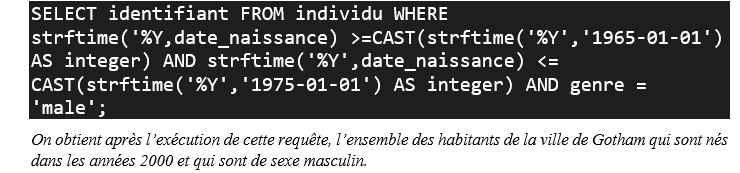
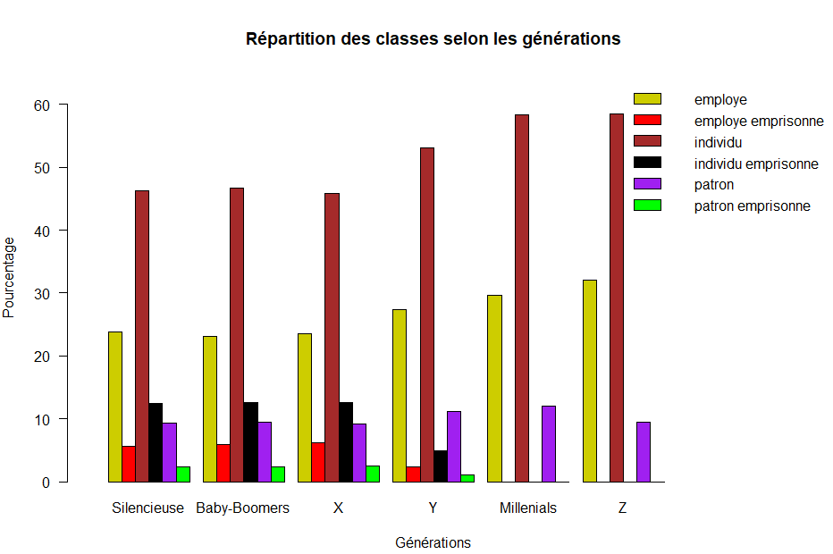

L'objectif de ce projet étaient de nous familiariser à la manipulation de données stockées dans des fichiers CSV et Système de gestion de base de données SQLite dans le but d'extraire de l'information en utilisant les langages Python et SQL. Concrètement dans le contexte, il s'agissait de retrouver l'identité d'un criminel surnommé "Batman" dans la ville de "Gotham" en explorant des fichiers de données au format CSV comprise entre 360Ko et 11,50Mo ainsi qu'une base de données SQLite. Notre exploration se fait sur d'un certain nombre d'informations ou indices qui nous ont été fourni concernant l'identité de Batman. Une de ses informations était par exemple « Batman a la trentaine dans les années 2000 ».
Les résultats obtenus ont été stocké dans un fichier txt. Et de plus, nous avons créé des visualisations sur les résidents de la ville de Gotham.
Dans un premier temps, nous avons crée une base de données SQLite globale à partir des fichiers CSV et de la base de données SQLite mis à notre disposition. Notre but était d'harmoniser les données afin de faciliter leur manipulation.
Dans un second temps, il faut noter que pour atteindre l'objectif du projet, nous devons questionner notre base de données à
travers des requêtes SQL. Pour chaque indice disponible sur l'identité de Batman, nous pouvions écrire une requête ; le nombre de
requêtes à écrire pouvait donc facilement grimper. Après réflexion, nous avons décidé de regouper plusieurs indices dans une requête ;
ce qui nous amène à réaliser des jointures entre plusieurs tables. Nous avons donc pu avoir quatre requêtes en tout. Par exemple, une de nos requêtes, présentée ci-dessous,
regroupe trois indices « Batman est un individu lamba de la ville de Gotham » , « Batman a la trentaine dans les années 2000 » et
« Batman est un homme ».

Enfin, en croisant les résultats de cette requête et des autres trois requêtes, nous avons identifié Batman et écrire notre résultat dans un fichier TXT.
Par ailleurs, nous avons créé trois visualisations basées sur nos données
concernant la population de Gotham. Il s'agit précisement de la répartition de l'argent au sein de la population selon les classes, de
la comptabilité de la police et de la répartition des classes de la population de Gotham selon les générations. Nous avons représenté pour cela
des histogrammes et diagrammes à barre verticale. Le graphique ci-dessous représente la répartition des classes
de la population de Gotham selon les générations.
